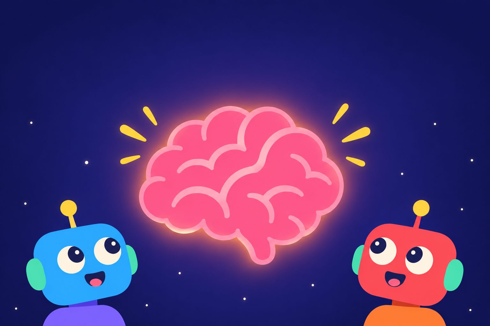
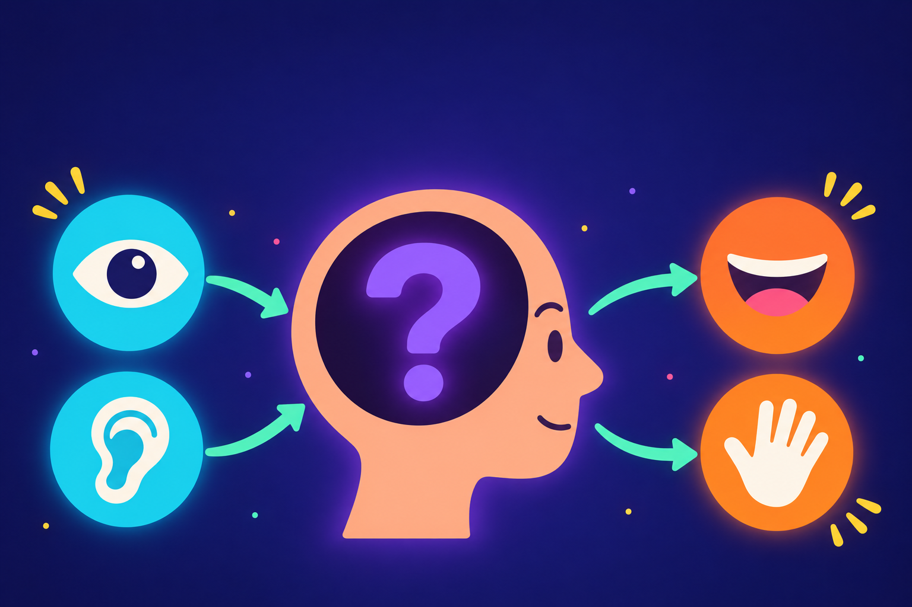

← → navigate · F fullscreen · V vector/painted · H hide
AI Brain · Part 1
AI can't think.
Two structural reasons why today's models are the wrong shape for a mind, and what we're building instead.

The picture we all know
Inputs. Outputs. And a hidden middle.
We sense the world, we act on the world, and in between sits the part nobody can see: the brain.

The picture we all know
AI copies the outside. The middle is wrong.
Text in, text out, a box in between. The shape looks right. What's inside the box does not.
Problem 1 · Structure
In a brain, signals go everywhere.
Forward, backward, sideways, in loops. Nobody assigned a direction. Activity circulates and feeds back on itself.
Problem 1 · Structure
In an AI, signals go one way.
Layer one talks to layer two, two to three, and out. Nothing flows back. Nothing circulates. That's a calculator, not a brain.
Problem 1 · Structure
A brain never stops. An AI runs once.
You are thinking from birth to death. A model is idle until called, computes once, and halts. Between calls it doesn't exist.
Problem 1 · Structure
You can't get a mind out of a pipe.
Can't send a signal back → can't reconsider
Halts between inputs → no train of thought
Scale it up → still a very large function
The loop people bolt on from outside lives in the harness, not in the mind.
Problem 2 · Thought
A thought is not text.
Right now you can feel several things, picture several things, and reach back to several moments, all at once. None of it is words.
Problem 2 · Thought
For an AI, thought is text.
When it "reasons", it writes words to itself and reads them back. Its inner monologue is a transcript. If a thought can't be spelled, it can't have it.
Problem 2 · Thought
The middle is a filter, not a mind.
Text enters, passes through fixed layers, leaves as text. Nothing is held. Nothing is retained except the words already produced.
No place for a hunch
No place for a mood
No place for two options unnamed
It doesn't think. It processes. It's just very good at producing what thought would look like written down.
A system that can only hold what it can say can form a complex sentence. Not a complex thought.
What we're building
Every node to every node. Always ticking.
Sensors see the board
Hidden nodes: never read as text
A move fires when a node crosses a threshold
No layers. No direction. The brain is running before the board changes and keeps running after it moves.
What those hidden nodes are doing between moves is the closest thing here to a thought.
Next
Can it learn tic-tac-toe without being told the rules?
Nobody tells it what a legal move is or what winning means. It sees the board, it fires, and it either survives or it doesn't.
AI Brain · github / docs in the descriptionPart 2: how it's grown, not trained